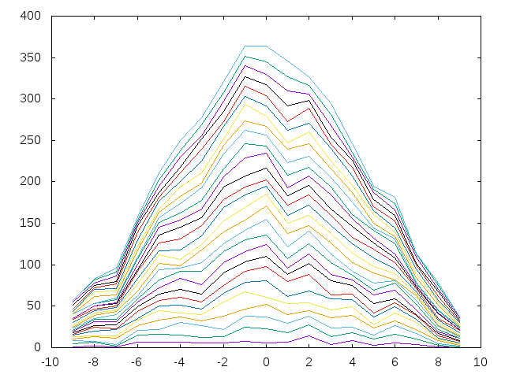

Usando la librería Data.Number.CReal, que se instala con
se pueden calcular el número pi con la precisión que se desee. Por ejemplo,
λ> import Data.Number.CReal
λ> showCReal 60 pi
"3.141592653589793238462643383279502884197169399375105820974945"
importa la librería y calcula el número pi con 60 decimales.
La distribución de las diferencias de los dígitos consecutivos para los 18 primeros n dígitos de pi se calcula como sigue: los primeros 18 dígitos de pi son
3, 1, 4, 1, 5, 9, 2, 6, 5, 3, 5, 8, 9, 7, 9, 3, 2, 3
Las diferencias de sus elementos consecutivos es
2, -3, 3, -4, -4, 7, -4, 1, 2, -2, -3, -1, 2, -2, 6, 1, -1
y la distribución de sus frecuencias en el intervalo [-9,9] es
0, 0, 0, 0, 0, 3, 2, 2, 2, 0, 2, 3, 1, 0, 0, 1, 1, 0, 0
es decir, el desde el -9 a -5 no aparecen, el -4 aparece 3 veces, el -2 aparece 2 veces y así sucesivamente.
Definir las funciones
distribucionDDCpi :: Int -> [Int]
graficas :: [Int] -> FilePath -> IO ()
tales que
- (distribucionDDCpi n) es la distribución de las diferencias de los dígitos consecutivos para los primeros n dígitos de pi. Por ejemplo,
λ> distribucionDDCpi 18
[0,0,0,0,0,3,2,2,2,0,2,3,1,0,0,1,1,0,0]
λ> distribucionDDCpi 100
[1,2,1,7,7,7,6,5,8,6,7,14,4,9,3,6,4,1,0]
λ> distribucionDDCpi 200
[3,6,2,13,14,12,11,12,15,17,15,19,11,17,8,13,9,2,0]
λ> distribucionDDCpi 1000
[16,25,23,44,57,61,55,75,92,98,80,88,64,65,42,54,39,14,8]
λ> distribucionDDCpi 5000
[67,99,130,196,245,314,361,391,453,468,447,407,377,304,242,221,134,97,47]
- (graficas ns f) dibuja en el fichero f las gráficas de las distribuciones de las diferencias de los dígitos consecutivos para los primeros n dígitos de pi, para n en ns. Por ejemplo, al evaluar (graficas [100,250..4000] "distribucionDDCpi.png" se escribe en el fichero "distribucionDDCpi.png" la siguiente gráfica

Leer más…